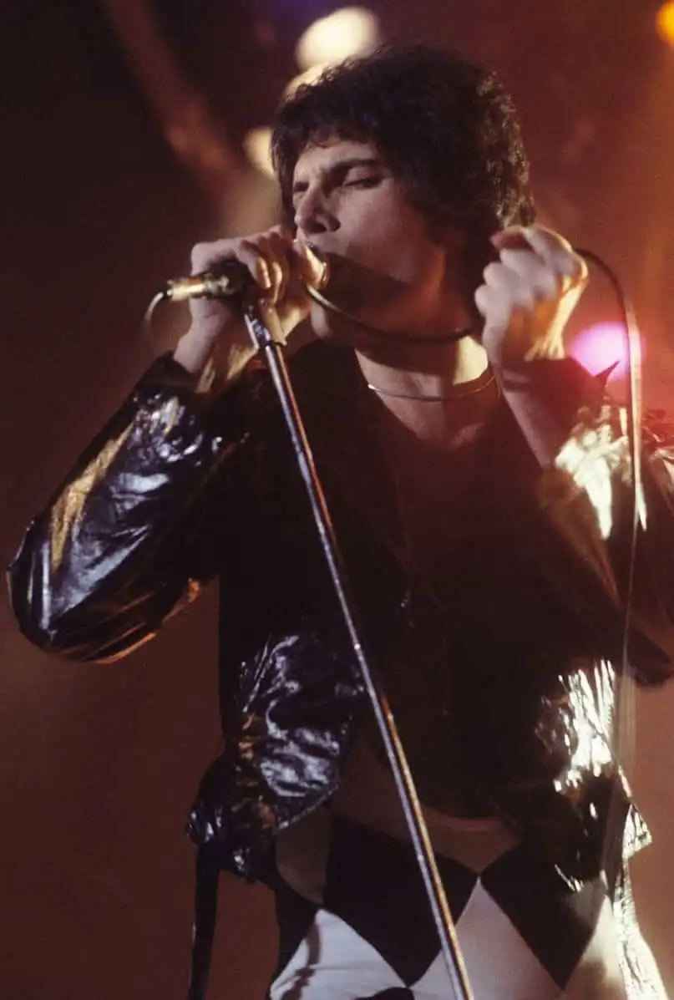

Farrokh Bulsara
Instruments: Vocals keyboards
Active Band Memeber: 1969–1991
Born in Zanzibar on Sept. 5, 1946
Died in London, England on Nov. 24, 1991
Freddie Mercury
Freddie Mercury (1946 – 1991) was a British-Indian mercurysinger-songwriter, pianist, guitarist and co-founder of the rock band Queen. As a performer, he was known for his vocal abilities (he had a rare four-octave range) and flamboyant stage performances. He dressed in a range of extravagant costumes and was a supreme entertainer. As a songwriter, he composed many international hits, including “Bohemian Rhapsody”, “Killer Queen”, “Somebody to Love”, “Don’t Stop Me Now”, “We Are the Champions” and “Crazy Little Thing Called Love”.
In addition to his work with Queen, he also led a solo career and was occasionally a producer and guest musician (piano or vocals) for other artists. In his second solo album Barcelona (1988) he fused both opera and pop, causing a mixture of critical responses. However, it proved a great commercial success.
Mercury, who was of Parsi descent, he was born in Zanzibar and grew up in India. He has been referred to as “Britain’s first Asian rock star.” He died of bronchopneumonia induced by HIV (AIDS) on 24 November 1991, only one day after publicly acknowledging he had the disease – at a time when there was stigma over Aids. His boyfriend, later said Mercury had been diagnosed with HIV in 1987.
An extrovert on stage, he was introverted off the stage. He rarely gave interviews and kept himself to himself. He was bisexual and had a long-term relationship with Mary Austin. In 2006, Time Asia named him as one of the most influential Asian heroes of the past 60 years, and he continues to be cited as one of the greatest singers in the history of popular music. In 2008, Rolling Stone ranked Mercury eighteenth on its List of the 100 Greatest Singers of All Time.
Freddie Mercury had many loves in his life. One of his big passions was his love of cats. Mercury so loved cats he was once described as “rock’s greatest lover of cats.” According to his last partner (and the man he called his “husband”) Jim Hutton, Mercury “treated cats like his own children."
When on tour, or away recording, Mercury regularly phoned home to speak to his beloved felines. During his lifetime, Mercury had ten cats starting in the seventies with Tom and Jerry (who he shared with the woman Mercury described as his “common-law wife” Mary Austin), Tiffany (a present from Austin), and then a cluster of cats (Delilah, Dorothy, Goliath, Lily, Miko, Oscar and Romeo) who he shared with Hutton at their home in Garden Lodge, Logan Mews, London.
Delilah was a spoilt cat and depended on Freddie for everything, even protection from the other cats. They would gang up on her and she would run into our bedroom—it was a cat sanctuary, In many ways the cats were Freddie’s children, and we all thought of them that way. The slightest feline sneeze or twitch and he’d send them off to the vet for a check-up. And we were old-fashioned when it came to having to have sex in total privacy. Whenever Freddie and I jumped in the bedroom to make love, he would always ensure that none of the cats were watching.
Mercury dedicated his solo album Mr. Bad Guy (1985) “to my cat Jerry—also Tom,Oscar, and Tiffany, and all the cat lovers across the universe—screw everybody else!” and so loved Delilah that he wrote a song about her on Queen’s Innuendo album in 1991.
Before he died in 1991, Mercury told one journalist he planned to leave everything to “Mary and the cats.” And here are some of those little darlings who outlived Freddie and inherited his wealth.